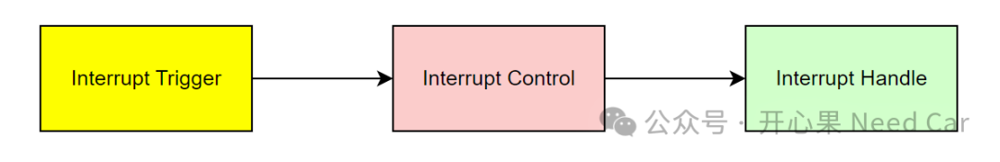
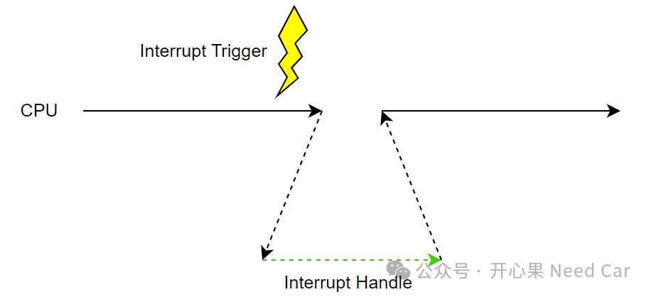
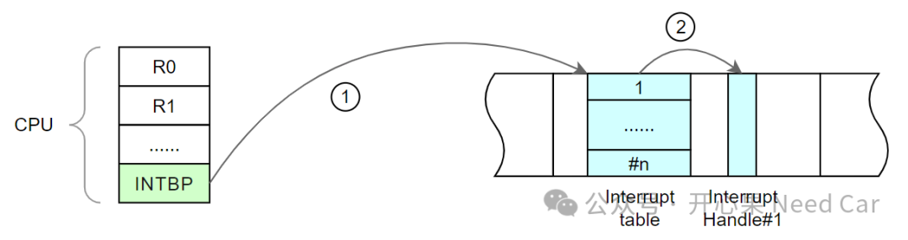
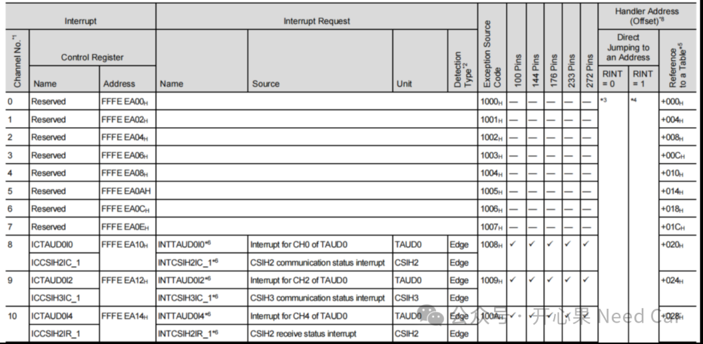
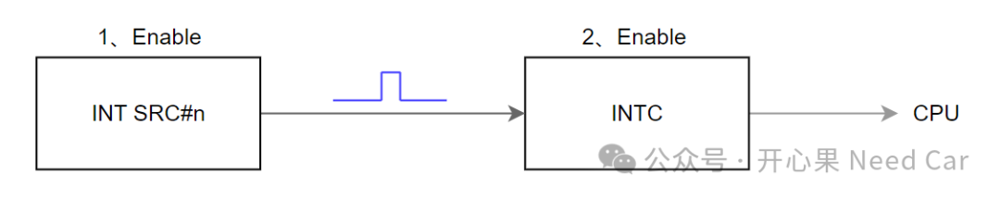

开心果 Need Car · 2024-05-31T07:03:00+08:00 · 微信原文
汽车领域使用的芯片中，中断系统已然是标配。掌握中断系统是一个工程师的基本技能。了解一个事物，最好的方式就是实践。本文，基于RH850 F1KM，聊一聊"中断"。中断系统主要包含三个部分：中断触发源、中断控制及中断处理，示意如下：


1、中断基地址及中断函数入口地址

中断向量表基地址可以在链接文件中设定，也可以在头文件（eg：*.h）等位置设定。
2、中断函数注册
void inticup2pe_DataFlashRq_handler(void){/* do something*/}
void inticup2pe_DataFlashRq_handler(void){/* do something*/}
.......offset (IRQ_TABLE_START+0x059C).extern _inticup2pe_DataFlashRq_handler.word _inticup2pe_DataFlashRq_handler.word __unused_isr......
注意：链接文件注册中断函数时，函数前需要添加下划线"_"。
3、中断触发方式及中断控制

对于每个中断，中断优先级、中断触发方式等需要通过中断控制寄存器（Interrupt Control Registers）配置。
（一）中断使能
中断的使能包含两个部分：
1、中断触发源使能，即：使能对应中断源的触发能力
2、中断控制的使能，即：中断控制单元使能，使其可以接收中断源的请求，并把仲裁后的结果传递给CPU。
示意如下：

往期精彩回顾